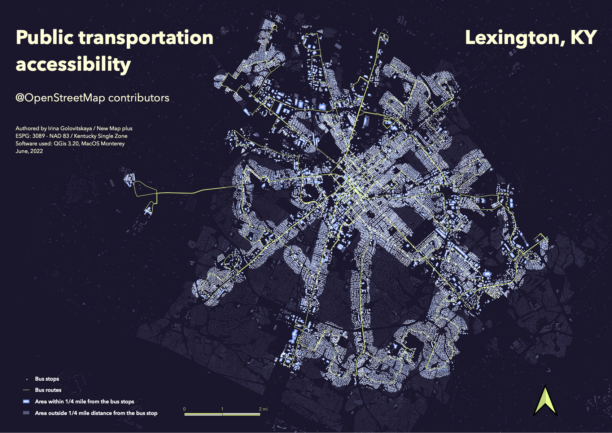
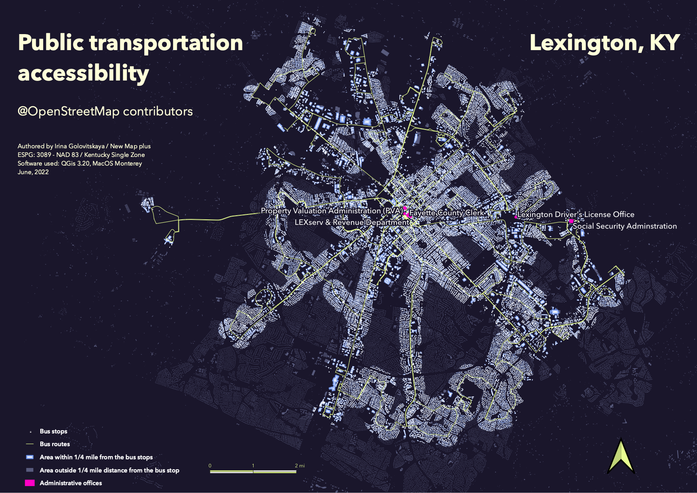

High resolution
Public transportation accessibility in Lexington, KY
Authored by: Irina Golovitskaya / New Map Plus
Access to public transport can be crucial in maintaining daily activities. It is especcially important for people with lower income, people in difficult life situations or those who are new to the city.
There may be fancy new buses with the best AC in the world, and there may be brand new rapid bus lanes, but despite all that, the first and foremost consideration is the density of the routes and proximity to bus stops.
U.S. Department of Transportation suggests 1/4 mile as an optimal distance to the bus stop.
If it requires more to reach the nearest stop, a person will probably want to consider other transportation options. This distance is used to define which areas in the city are served with public transportation in Lexington.
There are many areas in Lexington, which are underserved with public transportation. Understanding of the effects of that on the real life of real people requires more information:
who lives in thoses areas, how many public facilities and offices are there and what residents of those neighborhoods want to see around them. We need more data and more focused approach to make sense of the analysis.

High resolution
When I came to Lexington as an international student, I had to visit a lot of local offices to get my documents done. It is relevant not only for international students,
but also for all newcomers, who may not have even driver's license. Thus, on the second map
Map details
© OpenStreetMap contributors
Public transportation accessibility in Lexington, KY.
Data acquired from OSM.
Software used: QGis 3.20, MacOS Monterey.
Coordinate system: ESPG: 3089 / NAD83 / Kentucky Single Zone (ftUS).
University of Kentucky New Maps Plus, Spring 2022.